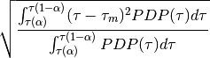

calculate root mean square delay spread starting from delay tau_0
| Parameters: | alpha : float threshold : float
tau0 : float
|
|---|
See also
Notes

Examples
>>> from pylayers.measures.mesuwb import *
>>> import matplotlib.pyplot as plt
>>> M = UWBMeasure(1)
>>> ch4 = M.tdd.ch4
>>> f1,a1=ch4.plot(color='k')
>>> tit0 = plt.title("WHERE1 M1 UWB Channel impulse response")
>>> f2,a2=ch4.plot(color='k')
>>> tit1= plt.title("WHERE1 M1 UWB Channel impulse response (Zoom 1)")
>>> ax1=plt.axis([10,160,-90,-50])
>>> f3,a3=ch4.plot(color='k')
>>> tit2 = plt.title("WHERE1 M1 UWB Channel impulse response (Zoom 2)")
>>> ax2=plt.axis([20,120,-80,-50])
>>> plt.show()
>>> tau_moy = ch4.tau_moy()
>>> print "tau_moy: %2.2f ns" % tau_moy
tau_moy: 38.09 ns
>>> tau_rms = ch4.tau_rms()
>>> print "tau_rms: %2.2f ns" % tau_rms
tau_rms: 13.79 ns